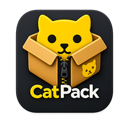

Crea archivos propios de CatPack con metadata, rutas relativas y compresión ZSTD.
GATOCHENTE Archive
Nueva
CatPack 4 Beta
CatPack
Un archivador moderno para Windows, creado para comprimir, extraer, inspeccionar y verificar archivos .gcat con una experiencia limpia y rápida.
.gcat
ZSTD
SHA-256
Windows
Disponible para instalación
Windows
Windows puede mostrar una advertencia de publicador desconocido porque esta beta todavía no está firmada digitalmente.
Pack
Verify

Arrastra y suelta archivos
.gcatZSTDSHA-256
Valida rutas para prevenir path traversal y evita sobrescribir archivos sin permiso.
Comprueba integridad con hashes SHA-256 y lectura de información del archivo.
La app revisa latest.json para descargar futuras versiones desde GATOCHENTE.
Versión más reciente
CatPack 4 Beta
La nueva beta es la versión recomendada. El instalador incluye la app, el CLI, los iconos, accesos directos, asociación de archivos .gcat y desinstalador.
Descargar versión 4 Beta
Requiere Windows 10 o superior para un mejor funcionamiento.
Versiones alternativas
Versiones anteriores
Las betas anteriores siguen disponibles para quienes necesiten continuar usando una versión previa.